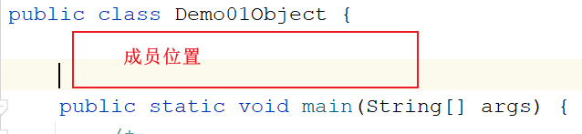
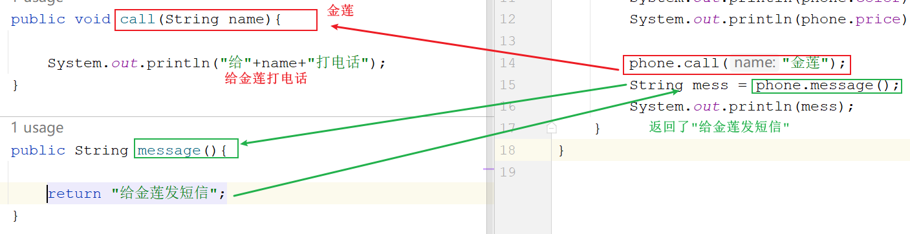
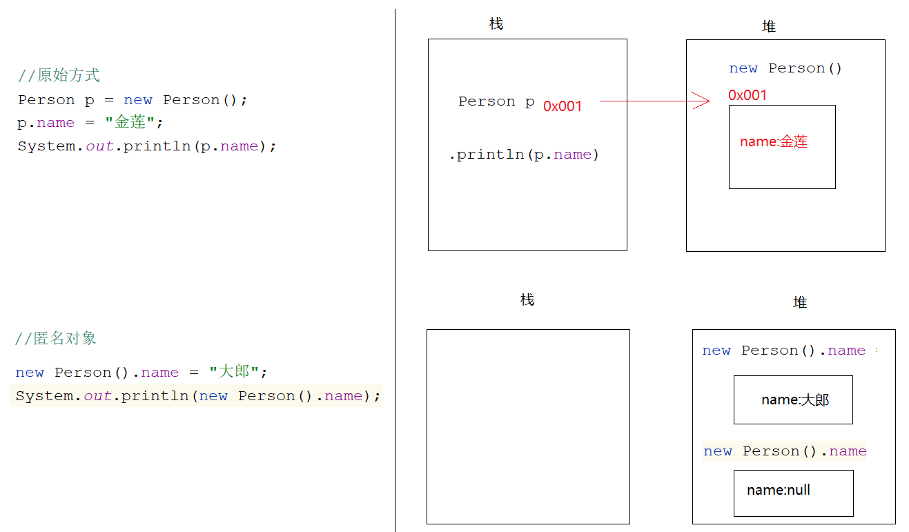
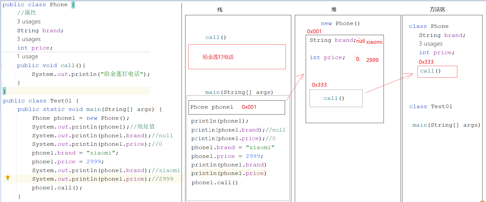
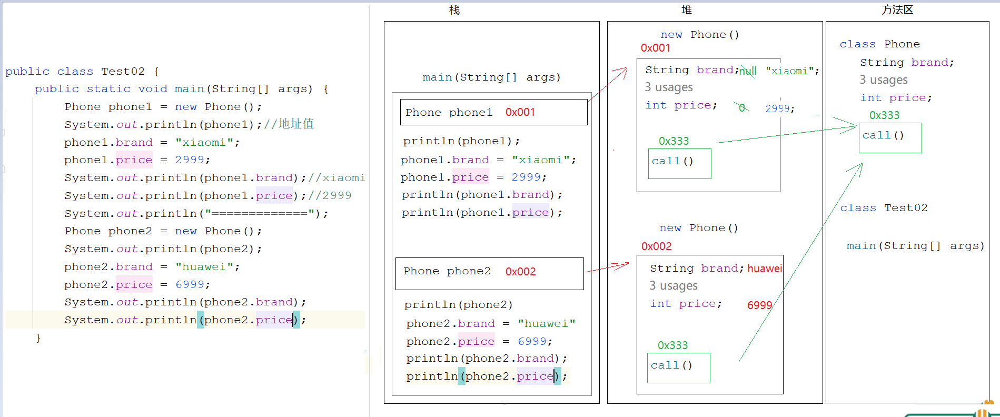
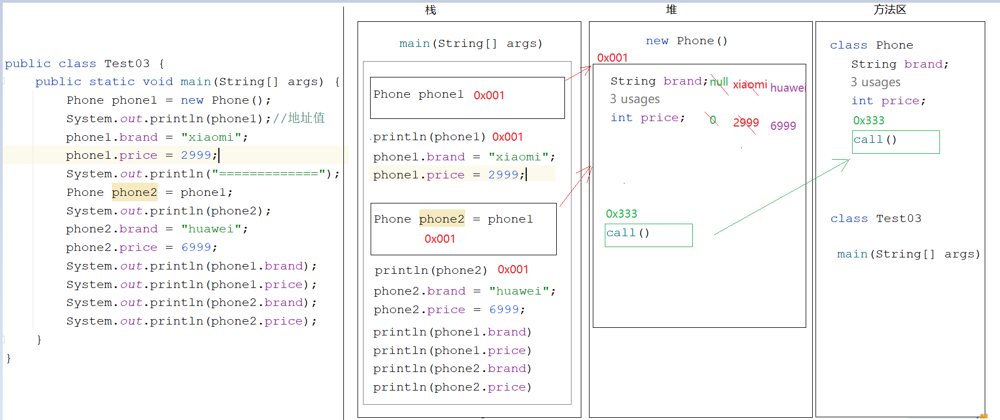

来源：用户提供的 笔记(1).zip / 03_笔记/day07_面向对象/模块七_面向对象.md。保留原课程内容，历史环境、示例错误和故意报错的教学代码应结合上下文阅读。
模块七_面向对象
java
模块六回顾:
1.概述:拥有功能性代码的代码块
将来干开发一个功能就应该对应一个方法
2.方法的通用定义格式:
修饰符 返回值类型 方法名(参数){
方法体
return 结果
}
a.修饰符:public static
b.返回值类型:方法最终返回的结果的数据类型
c.方法名:给方法取的名字,见名知意,小驼峰式
d.参数:进入到方法内部参与执行的数据
e.方法体:具体实现该方法的具体代码
f.return 结果:该方法操作完参数之后,最终返回的一个数据
3.无参无返回值方法:
a.定义:
public static void 方法名(){
方法体
}
b.调用:方法名()
4.有参无返回值方法:
a.定义:
public static void 方法名(形参){
方法体
}
b.调用:
方法名(实参)
5.无参有返回值方法:
a.定义:
public static 返回值类型 方法名(){
方法体
return 结果
}
b.调用:
数据类型 变量名 = 方法名()
6.有参有返回值方法:
a.定义:
public static 返回值类型 方法名(形参){
方法体
return 结果
}
b.调用:
数据类型 变量名 = 方法名(实参)
7.注意事项:
a.方法不调用不执行,main方法是jvm调用的
b.方法之间不能互相嵌套
c.方法的执行顺序只和调用顺序有关
d.void不能和return 结果共存,但是能和return共存
void:代表没有返回值
return 结果:代表有返回值,先将结果返回,再结束方法
return:仅仅代表结束方法
e.一个方法中不能连续写多个return
f.调用方法是,需要看有没有此方法
8.参数和返回值使用时机:
a.参数:当想将一个方法中的数据,传递到另外一个方法中操作,就需要参数了
b.返回值:如果调用者需要使用被调用者的结果,被调用者就需要将自己的结果返回
9.方法的重载:
a.概述:方法名相同,参数列表不同
b.什么叫参数列表不同:
参数个数不同,类型不同,类型顺序不同
c.和什么无关:
和参数名无关,和返回值无关
模块七重点:
1.知道为啥使用面向对象思想编程
2.知道怎么使用面向对象思想编程
3.知道什么时候使用面向对象思想编程
4.会利用代码去描述世间万物的分类
5.会在一个类中访问另外一个类中的成员 -> new对象
6.成员变量和局部变量的区别
第一章.类和对象
1.面向对象的介绍
java
1.面向过程:自己的事情自己干,代表语言C语言
洗衣服:每一步自己要亲力亲为 -> 找个盆,放点水,找个搓衣板,搓搓搓
2.面向对象:自己的事情别人帮忙去干,代表语言Java语言
洗衣服:自己的事情别人干 -> 全自动洗衣机
3.为啥要使用面向对象思想编程:懒
很多功能别人都给我们实现好了,我们只需要直接拿过来使用即可,简化了我们自己的编写过程,减少了我们的代码量
4.什么时候使用面向对象思想编程:
调用别人的功能时
在一个类中想使用别的类中的成员时,就使用面向对象思想编程
至于我们使用的功能人家怎么实现的,我们不需要关心,我们只需要知道怎么使用即可
5.怎么使用面向对象思想编程:
a.new呀,new完点呀-> 点代表的是调用
b.特殊:如果调用的成员带static关键字,我们不需要new,我们直接类名点即可
java
public class Demo01Object {
public static void main(String[] args) {
/*
我们想在Demo01Object类中使用Scanner类中的next方法实现录入字符串
那么我们就需要使用面向对象思想编程
对象:Scanner-> new出来的
对象实现好的功能:next()
我们只需要知道找来Scanner这个对象,就可以调用这个对象中实现好的next方法
至于next方法怎么实现的,我们不需要关心
*/
Scanner sc = new Scanner(System.in);
String data = sc.next();
System.out.println("data = " + data);
System.out.println("===================================");
/*
我们想在Demo01Object类中使用Random类中的nextInt方法实现随机整数
那么我们就需要使用面向对象思想编程
对象:Random -> new出来的
对象实现好的功能:nextInt()
我们只需要知道找来Random这个对象,就可以调用Random中的nextInt方法
至于nextInt怎么实现的,我们不需要关心
*/
Random rd = new Random();
int data2 = rd.nextInt();
System.out.println("data2 = " + data2);
System.out.println("====================================");
int[] arr = {1,2,3,4};//[1,2,3,4]
/* System.out.print("[");
for (int i = 0; i < arr.length; i++) {
if (i== arr.length-1){
System.out.print(arr[i]+"]");
}else{
System.out.print(arr[i]+",");
}
}*/
/*
Arrays就是我们找来的对象
toStrig就是此对象中实现好的功能
我们只需要调用,怎么实现我们不关心
*/
System.out.println(Arrays.toString(arr));
}
}
2.类和对象
2.1类(实体类)_class
java
1.测试类:带main方法的类,主要是运行代码的
2.实体类:是一类事物的抽象表示形式
世间万物的分类:比如: 人类 狗类 猫类 鼠标类
java
组成部分:
1.属性(成员变量):这一类事物有啥
a.定义位置:类中方法外
b.作用范围:作用于当前类
c.定义格式: 数据类型 变量名
d.默认值:
整数:0
小数:0.0
字符:'\u0000'
布尔:false
引用:null
2.行为(成员方法):这一类事物都能干啥
只需要将模块六所学的方法中的static干掉,其他的都一样

java
public class Person {
//属性-> 成员变量
String name;
int age;
//行为 -> 成员方法
public void eat(){
System.out.println("人要干饭");
}
public void drink(){
System.out.println("人要喝水");
}
}
描述动物类
javapublic class Animal { String kind;//品种 String color;//颜色 public void eat(){ System.out.println("动物要吃饭"); } public void sleep(){ System.out.println("动物都睡觉"); } }描述手机类
javapublic class Phone { //属性 String brand; String color; int price; //行为 public void call(String name){ System.out.println("给"+name+"打电话"); } public String message(){ return "给金莲发短信"; } }
2.2对象
java
1.概述:一类事物的具体体现
2.使用:
a.导包: import 包名.类名
如果两个类在同一个包下,想要使用对方的成员不需要导包
如果两个类不在同一个包下,想要使用对方的成员需要导包
特殊包:java.lang -> 使用lang包下的类不需要导包 -> String
友情提示:在学四种权限修饰符之前,尽量让两个类在同一个包下
b.创建对象:想要使用哪个类中的成员,就new哪个类的对象
类名 对象名 = new 类名() -> 比如: Person person = new Person()
c.调用成员(成员变量,成员方法) -> 想要使用哪个类中的成员,就用哪个类的对象去点哪个成员
对象名.成员变量名 = 值
对象名.方法名() -> 调用的是无参无返回值方法
对象名.方法名(实参) -> 调用的是有参无返回值方法
数据类型 变量名 = 对象名.方法名() -> 调用的是无参有返回值方法
数据类型 变量名 = 对象名.方法名(实参) -> 调用的是有参有返回值方法
java
public class Person {
//属性-> 成员变量
String name;
int age;
//行为 -> 成员方法
public void eat(){
System.out.println("人要干饭");
}
public void drink(){
System.out.println("人要喝水");
}
}
java
public class Demo01Person {
public static void main(String[] args) {
Person person = new Person();
System.out.println(person.name);
System.out.println(person.age);
person.name = "金莲";
person.age = 26;
System.out.println(person.name);
System.out.println(person.age);
person.eat();
person.drink();
}
}
3.练习
java
需求:用代码去描述一个手机类,在测试类中为手机类中的属性赋值,并且调用手机类中的功能
java
public class Phone {
//属性
String brand;//品牌
String color;//颜色
int price;//价格
//行为
public void call(String name){
System.out.println("给"+name+"打电话");
}
public String message(){
return "给金莲发短信";
}
}
================================================================
public class Demo02Phone {
public static void main(String[] args) {
Phone phone = new Phone();
phone.brand = "苹果";
phone.color = "黑色";
phone.price = 7999;
System.out.println(phone.brand);
System.out.println(phone.color);
System.out.println(phone.price);
phone.call("金莲");
String mess = phone.message();
System.out.println(mess);
}
}

3.匿名对象的使用
java1.int i = 10 a.int:是数据类型 b.i:变量名 c.等号右边的10:真正的数据 2.Person p = new Person() a.等号左边的Person:对象的类型,好比是int b.p:对象名 c.等号右边的new Person():真正的数据,是一个Person对象,将这个对象真正创建出来了
java
1.所谓的匿名对象:其实就是没有等号左边的部分,只有等号右边的部分(对象)
2.使用:
new 对象().成员
3.注意:
a.如果我们只想单纯的调用一个方法,让方法执行,我们可以考虑使用匿名对象
b.但是如果涉及到赋值,千万不要用匿名对象
java
public class Person {
String name;
public void eat(){
System.out.println("人要吃饭");
}
}
java
public class Demo01Person {
public static void main(String[] args) {
//原始方式
Person p = new Person();
p.name = "金莲";
System.out.println(p.name);
p.eat();
System.out.println("=================");
//匿名对象
new Person().eat();
new Person().name = "大郎";
System.out.println(new Person().name);//null
}
}

4.一个对象的内存图

5.两个对象的内存图

phone1和phone2都是new出来的,所以在堆内存中产生了两个不同的空间,所以改变一个空间的数据不会 影响另外一个空间中的数据
6.两个对象指向同一片空间内存图

phone2是phone1给的,phone1在内存中保存的是地址值,此时phone1和phone2地址值是一样的了,操作的是同一片空间的数据,所以改变一个对象的数据会影响到另外一个对象
第二章.成员变量和局部变量的区别
java
1.定义位置不同(重点)
a.成员变量:类中方法外
b.局部变量:定义在方法之中或者参数位置
2.初始化值不同(重点)
a.成员变量:有默认值的,所以不用先手动赋值,就可以直接使用
b.局部变量:是没有默认值的,所以需要先手动赋值,再使用
3.作用范围不同(重点)
a.成员变量:作用于整个类
b.局部变量:只作用于自己所在的方法,其他方法使用不了
4.内存位置不同(了解)
a.成员变量:在堆中,跟着对象走
b.局部变量:在栈中,跟着方法走
5.生命周期不同(了解)
a.成员变量:随着对象的创建而产生,随着对象的消失而消失
b.局部变量:随着方法的调用而产生,随着方法的调用完毕而消失
java
public class Person {
String name;//成员变量
public void eat(){
int i = 10;//局部变量
System.out.println(i);
System.out.println(name);//成员变量不用手动赋值可以直接使用,因为有默认值
}
public void drink(){
int j;
//System.out.println(j);//局部变量没有默认值,所以需要手动赋值再使用
System.out.println(name);
//System.out.println(i);//i是eat方法的局部变量,在drink中使用不了
}
}
第三章.练习
java
需求:定义一个类MyDate,属性有 year month day
再定义一个类Citizen(公民类),属性有 name(String类型) birthday(MyDate类型) idCard(String),为这三个属性赋值,然后将值取出来
java
public class MyDate {
int year;
int month;
int day;
}
java
public class Citizen {
//姓名
String name; //默认值 null
/*
生日 MyDate类型
MyDate属于自定义类型(引用数据类型)
这种类型要操作之前必须要赋值
怎么赋值? 需要new对象赋值
*/
MyDate birthday = new MyDate(); // 默认值 null
//身份证
String idCard; //默认值null
}
java
public class Test01 {
public static void main(String[] args) {
Citizen citizen = new Citizen();
citizen.name = "涛哥";
citizen.idCard = "111111111";
/*
citizen.birthday获取的是MyDate对象
再去点year获取的是MyDate对象中的year
链式调用
*/
citizen.birthday.year = 2000;
citizen.birthday.month = 10;
citizen.birthday.day = 10;
System.out.println(citizen.name+","+citizen.birthday.year+","+citizen.idCard);
}
}
给引用数据类型赋值,需要new对象(String比较特殊,可以直接=赋值)